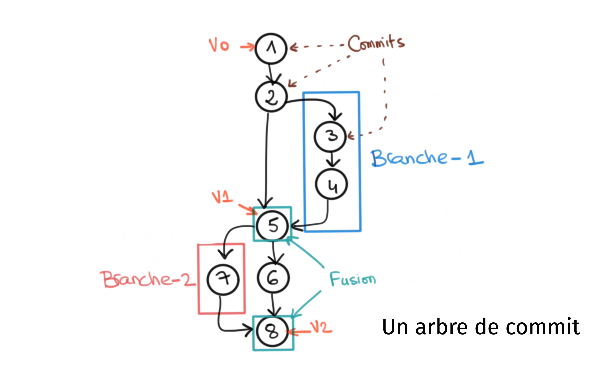

graph LR
A[Alice] -- Push --> B((Dépôt centralisé))
B -- Pull --> A
C[Bob] -- Push --> B
B -- Pull --> C
Cours 1 - Introduction au versionnage
1 Introduction au versionnage
Le versionnage ou la gestion de version (version control en anglais) est un processus qui consiste à enregistrer les modifications apportées à un fichier ou un ensemble de fichiers au fil du temps afin de pouvoir y accéder ultérieurement. Le versionnage est utilisé dans de nombreux domaines, notamment le développement logiciel, la gestion de projet, la gestion de contenu, etc.
Dans le cadre du développement logiciel, cette pratique permet de suivre l’évolution d’un projet de manière organisée et collaborative.
Définitions
Le versionnage est un processus qui consiste à enregistrer les modifications apportées à un fichier ou un ensemble de fichiers au fil du temps afin de pouvoir y accéder ultérieurement.
Une version est l’état d’un fichier ou d’un ensemble de fichiers à un moment donné.
1.1 Pourquoi le versionnage ?
Le versionnage permet de répondre à plusieurs besoins essentiels dans le développement logiciel, notamment:
- Gestion des modifications : Le versionnage permet de suivre les modifications apportées au code source d’un projet. Il permet de répondre à des questions telles que :
- Quels sont les changements apportés au code source ?
- Quand ont-ils été apportés ?
- Qui les a apportés ?
- Pourquoi ont-ils été apportés ? etc.
- Collaboration : Le versionnage permet à plusieurs développeurs de travailler sur le même projet en même temps. Il permet de répondre à des questions telles que :
- Comment les développeurs peuvent-ils travailler ensemble sur le même projet ?
- Comment peuvent-ils partager leurs modifications ?
- Comment peuvent-ils fusionner leurs modifications ? etc.
- Traçabilité : Le versionnage permet de suivre l’évolution d’un projet au fil du temps. Il permet de répondre à des questions telles que :
- Quels sont les changements apportés au projet ?
- Quand ont-ils été apportés ?
- Qui les a apportés ?
- Pourquoi ont-ils été apportés ? etc.
- Sauvegarde : Le versionnage permet de sauvegarder les modifications apportées au code source d’un projet. Il permet de répondre à des questions telles que :
- Comment revenir à une version antérieure du projet ?
- Comment récupérer une version supprimée du projet ? etc.
- Reproductibilité : Le versionnage permet de reproduire un projet dans un état donné. Il permet de répondre à des questions telles que :
- Comment reproduire un projet dans un état donné ?
- Comment reproduire un projet dans un état donné à une date donnée ? etc.
- Bonnes pratiques : Le versionnage permet d’appliquer des bonnes pratiques de développement logiciel. Il permet de répondre à des questions telles que :
- Comment maintenir un historique de version propre et organisé ?
- Comment documenter les modifications apportées au code source ? etc.
1.2 Concepts de base du versionnage
Le versionnage est basé sur les concepts essentiels suivants :
- Dépôt (Repository) : Un dépôt est un espace de stockage qui contient les fichiers d’un projet ainsi que l’historique des modifications apportées à ces fichiers. Il peut être local ou distant.
- Commit : Un commit est une modification apportée à un ou plusieurs fichiers d’un projet. Il est identifié par un identifiant unique appelé hash.
- Historique des commits (Commit tree) : L’historique des commits est la liste des commits qui ont été apportés à un projet. Il permet de suivre l’évolution d’un projet au fil du temps.
- Branche (Branch) : Une branche est une ligne de développement indépendante. Elle permet de travailler sur une fonctionnalité ou une modification sans affecter la branche principale du projet.
- Fusion (Merge) : Une fusion est l’opération qui consiste à intégrer les modifications apportées à une branche dans une autre branche.
Le graphique suivant illustre ces concepts : 
Vocabulaire
Les termes suivants sont couramment utilisés dans le contexte du versionnage :
- Dépôt distant (Remote repository) : Un dépôt distant est un dépôt qui est stocké sur un serveur distant. Il permet de partager les modifications apportées à un projet avec d’autres développeurs.
- Dépôt local (Local repository) : Un dépôt local est un dépôt qui est stocké sur la machine d’un développeur. Il permet de travailler sur un projet sans connexion à un serveur distant.
- Clone : Un clone est une copie d’un dépôt distant sur un dépôt local. Il permet de travailler sur un projet sans connexion à un serveur distant.
- Pull : Un pull est l’opération qui consiste à récupérer les modifications apportées à un dépôt distant et les fusionner avec un dépôt local.
- Push : Un push est l’opération qui consiste à envoyer les modifications apportées à un dépôt local vers un dépôt distant.
- Pull request : Une pull request est une demande de fusion de modifications apportées à un dépôt distant. Elle permet de demander à un propriétaire de dépôt de fusionner les modifications apportées à un dépôt distant avec le dépôt d’origine.
- Tag : Un tag est un identifiant symbolique qui permet de marquer un commit. Il est généralement utilisé pour marquer les versions stables d’un projet.
- Conflit : Un conflit est une situation dans laquelle deux modifications concurrentes affectent le même fichier. Il nécessite une intervention manuelle pour être résolu.
1.3 Outils de gestion de version
Pour mettre en place un processus de versionnage, il est nécessaire d’utiliser un outil de gestion de version.
Un outil de gestion de version est un logiciel qui permet de gérer les différentes versions d’un ensemble de fichiers (code source, documentation, etc.). Les outils de gestion de version sont couramment utilisés dans les projets de développement de logiciels pour suivre les modifications apportées au code source et pour faciliter la collaboration entre les membres d’une équipe.
Ils permmettent d’appliquer plus ou moins les principes essentiels du versionnage: stocker chaque version d’un fichier, d’enregistrer les modifications apportées à chaque version, de fusionner des versions différentes, de suivre l’historique des modifications, de revenir en arrière sur une version antérieure, et de travailler en collaboration avec d’autres personnes.
1.4 Types d’outils de gestion de version
Il existe deux types d’outils de gestion de version : les outils de gestion de version dits centralisés et les outils de gestion de version dits décentralisés.
Remarque
Dans ce cours nous allons utiliser l’outil de gestion de version décentralisé Git. Mais il est tout de même important de comprendre les différences entre les deux types d’outils.
1.4.1 Outils de gestion de version centralisés
Les outils de gestion de version centralisés sont basés sur un modèle client-serveur. Ils utilisent un dépôt centralisé pour stocker les fichiers d’un projet et l’historique des modifications apportées à ces fichiers.
- Les développeurs travaillent sur une copie locale du dépôt centralisé.
- Ils peuvent récupérer les modifications apportées au dépôt centralisé et les fusionner avec leur copie locale.
- Ils peuvent également envoyer les modifications apportées à leur copie locale vers le dépôt centralisé.
Les outils de gestion de version centralisés les plus populaires sont Subversion (SVN), Perforce, et ClearCase.
Le graphique suivant illustre le fonctionnement d’un outil de gestion de version centralisé :
Alice et Bob travaillent sur le même projet dont la gestion de version se fait par un outil de gestion de version centralisé
1.4.2 Outils de gestion de version décentralisés
On parle aussi d’outil de gestion distribué.
- Ils utilisent un dépôt local pour stocker les fichiers d’un projet et l’historique des modifications apportées à ces fichiers.
- Les développeurs travaillent sur une copie locale du dépôt distant. Ils peuvent récupérer les modifications apportées au dépôt distant et les fusionner avec leur copie locale.
- Ils peuvent également envoyer les modifications apportées à leur copie locale vers le dépôt distant.
Les outils de gestion de version décentralisés les plus populaires sont Git et Mercurial
Le graphique suivant illustre le fonctionnement d’un outil de gestion de version décentralisé :
graph LR
A[Dépôt local d'Alice] -- Push --> B((Dépôt distant))
B -- Pull --> A
C[Dépôt local de Bob] -- Push --> B
B -- Pull --> C
D[Alice] -- Commit --> A
E[Bob] -- Commit --> C
1.4.2.1 Comment ça marche ?
- Alice effectue un changement puis elle soumet ses modifications dans son dépôt local.
- Elle pousse (push) ces modification vers le dépôt distant.
- Le dépôt distant est mis à jour.
- Bob récupère la dernière version du projet (qui intègre les changements d’Alice) en mettant à jour son dépôt local par rapport au dépôt distant. (pull)
C’est comme si chacun avait son propre dépôt centralisé.
Avantages
- Travail en mode déconnecté : Les développeurs peuvent travailler en mode déconnecté sans être connectés en permanence à un serveur central.
- Meilleure sécurité : Les copies locales des fichiers sont stockées sur l’ordinateur du développeur, ce qui rend le système plus sûr et plus résistant aux attaques.
- Meilleure flexibilité : Les développeurs peuvent facilement créer des branches, expérimenter et fusionner des modifications sans affecter le code source principal.
- Performances améliorées : Les opérations locales sont beaucoup plus rapides que les opérations de synchronisation avec un serveur central.
Inconvénients
- Complexité accrue : Les développeurs doivent apprendre à gérer les dépôts locaux et distants, ce qui peut être plus complexe.
- Visibilité limitée : Les développeurs ne peuvent pas voir les modifications apportées par d’autres développeurs tant qu’ils n’ont pas synchronisé leurs dépôts locaux avec le dépôt distant.
- Gestion des conflits plus complexe : Les conflits peuvent être plus difficiles à gérer, car les développeurs doivent les résoudre localement avant de les pousser vers le dépôt distant.
1.5 Git
Dans ce cours, nous allons mettre en pratique les concepts de base du versionnage en utilisant l’outil de gestion de version décentralisé Git. Il est actuellement l’outil de gestion de version le plus utilisé, en particulier dans les projets open source, grâce à sa facilité d’utilisation, sa rapidité et sa flexibilité.
Note
Git a été créé en 2005 par Linus Torvalds, le créateur du noyau Linux. À l’époque, il cherchait un outil de gestion de version pour le développement du noyau Linux, mais n’était pas satisfait des outils existants tels que BitKeeper.
Torvalds a donc décidé de créer son propre outil de gestion de version, en s’appuyant sur les principes de conception du noyau Linux.
Le développement de Git a été principalement motivé par la nécessité de gérer efficacement le code source du noyau Linux, qui est un projet très complexe et en constante évolution avec des milliers de développeurs à travers le monde.
Au fil des ans, Git est devenu de plus en plus populaire auprès des développeurs et des entreprises. En 2008, le projet Git a été adopté par la communauté open-source et est rapidement devenu un outil de gestion de version standard pour de nombreux projets open-source.
Aujourd’hui, Git est largement utilisé dans l’industrie du développement de logiciels pour la gestion de versions de code source, la collaboration en équipe, et l’intégration continue. Les plateformes d’hébergement de code source telles que GitHub, GitLab et Bitbucket sont devenues des outils incontournables pour les projets de développement de logiciels, en grande partie grâce à l’adoption massive de Git.
1.5.1 Utiliser Git en ligne de commande
Il existe de nombreuses manières différentes d’utiliser Git. Il y a les outils originaux en ligne de commande et il y a de nombreuses interfaces graphiques avec des capacités variables. La plupart des IDE récents intègre déjà l’utilisation d’outils gestion de version.
Dans ce cours, nous utiliserons Git en ligne de commande.
- Tout d’abord, la ligne de commande est la seule interface qui permet de lancer toutes les commandes Git (la plupart des interfaces graphiques simplifient l’utilisation en ne couvrant qu’un sous-ensemble des fonctionnalités de Git).
- Si vous savez comment utiliser la version en ligne de commande, vous serez à même de comprendre comment fonctionne la version graphique, tandis que l’inverse n’est pas nécessairement vrai.
- De plus, le choix d’un outil graphique est sujet à des goûts personnels, mais tous les utilisateurs auront les commandes installées et utilisables.
Toutes les commandes Git s’utilisent de la manière suivante:
git <commande> [options]Il faudra alors taper dans un terminal git suivi du nom de la commande et éventuellement suivis d’autres options que nous allons voir plus tard.
Par exemple la commande init qui permet d’initialiser un dépôt Git et s’utilise de la manière suivante:
git init
Note
- Dans toute la suite de ce cours, surtout en TP, nous allons utiliser Git en ligne de commande. Pour ce faire, vous devez ouvrir un terminal sur votre machine.
- Si vous êtes sur Windows, vous pouvez utiliser Git Bash pour exécuter les commandes Git.
- Si vous êtes sur Linux ou Mac, vous pouvez utiliser le terminal intégré à votre système d’exploitation.
- Devant chaque commande, vous verrez le symbole
$. Ce symbole représente le prompt de votre terminal. Vous ne devez pas le copier lorsque vous exécutez les commandes Git. - Les lignes de commandes précédées du symbole
#sont des commentaires. Vous ne devez pas les copier lorsque vous exécutez les commandes.
1.5.2 Comment Git enregistre-t-il les fichiers ?
Une fois que vous avez créé un dépôt Git, l’outil va créer un répertoire .git qui contient tous les fichiers nécessaires au fonctionnement de Git. Ce répertoire est appelé dépôt Git ou dépôt local. Il est très important de ne pas modifier ou supprimer ce répertoire.
Git va alors retracer l’historique des modifications apportées aux fichiers du projet en travaillant avec trois zones différentes:
- la zone de travail (working directory)
- c’est le répertoire dans lequel sont stockés physiquement vos fichiers. C’est le répertoire dans lequel vous travaillez.
- la zone d’index (staging area)
- c’est une zone intermédiaire entre la zone de travail et la zone de dépôt.
- elle permet de marquer les modifications à envoyer lors du prochain commit.
- elle est matérialisée dans
.git/index
- la zone de dépôt (git repository)
- c’est le répertoire dans lequel sont stockés les fichiers de votre projet tels qu’ils étaient lors de votre dernier commit.
- Dans ce répertoire, Git stocke l’historique des modifications apportées à votre projet.
Les différentes commandes Git permettent de passer d’une zone à une autre. On peut voir le dépôt Git comme étant une base de données qui garde de manière compressée toutes les versions (que vous voulez que Git conserve) de votre projet. Le diagramme suivant montre comment passer un fichier d’une zone à une autre.
stateDiagram-v2
s1 : Git repository
s2 : Staging area
s3 : Working directory
s1 --> s2 : git reset
s2 --> s1 : git commit
s2 --> s3 : git checkout
s3 --> s2 : git add
La commande git status permet savoir quels fichiers sont différents d’une zone à une autre.
$ git status
# On branch main
# Changes to be committed:
# (use "git reset HEAD ..." to unstage)
#
# modified: accounts/forms.py
# modified: accounts/models.py
#
# Changes not staged for commit:
# (use "git add ..." to update what will be committed)
# (use "git checkout -- ..." to discard changes in working directory)
#
# modified: accounts/urls.py
# modified: accounts/views.pyIci, la réponse de git status indique par exemple que les fichiers:
accounts/forms.pyetaccounts/models.pysont indexés dans la zone de staging et attendent d’être ajouté dans le dépôt.accounts/urls.pyetaccounts/views.pyne sont pas encore dans la zone de staging et attendent d’y être ajoutés.
Le processus usuel est donc le suivant:
- On crée/modifie un fichier dans la zone de travail
- On l’ajoute dans la zone d’index avec
git add. - Ensuite, on soumets les modifications apportés au dépôt git avec
git commit.
1.5.3 Les commandes de base de Git
Voici les commandes de base de Git dans diverses situations telles qu’elles sont listées dans l’accueil de l’outil :
Démarrer un dépôt Git
cloneCloner un dépôt dans un nouveau répertoireinitCréer un dépôt Git vide ou réinitialiser un existant
Tavailler sur la modification actuelle
addAjouter le contenu de fichiers dans l’indexadd -uajouter tous les fichiers modifiés et supprimés (mais pas les “untracked”)
mvDéplacer ou renommer un fichier, un répertoire, ou un lien symboliquerestoreRestaurer des fichiersrmSupprimer des fichiers de la copie de travail et de l’index
Examiner l’historique et l’état du dépôt
diffAfficher les changements entre les commitslogAfficher l’historique des commitsstatusAfficher l’état de la répertoire de travail
Agrandir, marquer et modifier votre historique
branchLister, créer ou supprimer des branchescommitEnregistrer les modifications dans le dépôtmergeFusionner deux ou plusieurs historiques de développement ensemblerebaseDéplacer un ensemble de commits vers un autre point de baseresetRéinitialiser la HEAD courante à l’état spécifiéswitchBasculer de branche
Collaborer
fetchTélécharger les objets et références depuis un autre dépôtpullRapatrier et intégrer un historique depuis un dépôt distantpushPousser l’histoire local vers un dépôt distant
Si l’on ne se souvient pas de toutes les commandes
helpAffiche l’aide
Un aide mémoire est également à votre disposition ici.
Tip
Dans le premier TP associé à ce cours, nous allons installer, configurer Git et faire nos premiers pas avec l’outil.
1.4.1.1 Comment ça marche ?